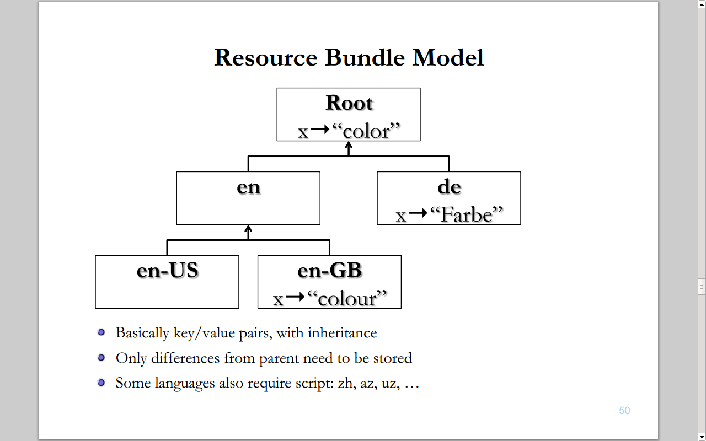

Globalize ♥ CLDR
Hello, Olá, ¡Hola, Hallo, 你好
by Rafael Xavier / @rxaviers / gh:rxaviers
jQuery, $
- Core
- UI & Mobile
- QUnit
- Globalize
- ...
- My name is Rafael Xavier de Souza;
- Computer Science at University of Sao Paulo (Brazil);
- Team member at jQuery;
- Former lead software engineer IBM (LTC);
What's the problem?
Why should people care about internationalization?
Translation ≠ Internationalization (i18n)
What is Internationalization?
I18n is the process that provides user with a localized experience that matches their own cultural and linguistic expectations.
If you internationalize, you design or develop your content, application, specification, and so on, in a way that ensures it will work well for, or can be easily adapted for, users from any culture, region, or language.
CLDR
Common Locale Data Registry (CLDR)
Available at http://unicode.org/cldr/
What is CLDR?
The Unicode CLDR provides key building blocks for software to support the world's languages, with the largest and most extensive standard repository of locale data available.
Formatting and parsing
Dates, times, timezones, numbers and currency values.
19/11/2013, 11/19/2013, 19.11.2013
Translations of names
Languages, scripts, countries and regions, currencies, eras, months, weekdays, day periods, timezones, cities, and time units.
Eg. January, Janeiro, Januar, janvier, 一月, ﻲﻧﺎﻳﺭ
Language & script information
Characters used; plural cases; gender of lists; capitalization; rules for sorting & searching; writing direction; transliteration rules; rules for spelling out numbers; rules for segmenting text into graphemes, words, and sentences.
Eg. Горбачёв ↔ Gorbachev, Gorbacev, Gorbatchev, Gorbačëv, Gorbachov, Gorbatsov, Gorbatschow
Country information
Language usage, currency information, calendar preference and week conventions, postal and telephone codes.
Eg. current currency for BR = BRL (R$)
Globalize
Globalize.culture( "en" );
Globalize.parseDate( "1/2/2003" );
// => Thu Jan 02 2003
Globalize.culture( "pt_BR" );
Globalize.parseDate( "1/2/2003" );
// => Sat Feb 01 2003
Where does data come from?
- Started by importing locale data from .Net (early 2010);
- Giving as about as 350 "cultures";
Globalize ♥ CLDR
Goal
- Leverage the official CLDR JSON data;
- Allow users to load as much or as little data as they need;
- Avoid duplicating data if using multiple i18n libraries that leverages CLDR;
- Run in browsers or node.js;
CLDR data
Locale Data Markup Language (LDML)
http://www.unicode.org/reports/tr35/
janeiro
CLDR JSON data
CLDR JSON Bindings
http://cldr.unicode.org/index/cldr-spec/json
"main": {
"pt_BR": {
"dates": {
"calendars": {
"gregorian": {
"months": {
"format": {
"wide": {
"1": "janeiro"
}
}
}
}
}
}
}
}
json.zip
- Ready for use;
- Top 20 languages unicode.org consider to be the "most used" languages;
- Complete amount of data per language;
- Inheritance fully resolved;
- http://www.unicode.org/public/cldr/latest/json.zip
tools.zip
- LDML ➙ JSON;
- Generate resolved (quicker access) / unresolved (save space or bandwidth) JSON;
- http://www.unicode.org/Public/cldr/latest/tools.zip
Example: My Globalized App
wget "http://www.unicode.org/public/cldr/latest/json.zip"
unzip json.zip -d cldr
my-app
├── cldr
│ ├── main
│ │ ├── pt_BR
│ │ │ ├── ...
│ │ │ └── ca-gregorian.json
│ │ ...
│ └── supplemental
│ ├── likelySubtags.json
│ ├── timeData.json
│ ├── weekData.json
│ └── ...
└── index.html
index.html (browser)
<!doctype html>
<head>
<meta charset="utf-8">
<title>My Globalized App</title>
</head>
<body>
<script src="globalize.js"></script>
<script>
Globalize.load( CLDRJsonData ); // Needed CLDR portion only
Globalize.locale( "pt_BR" );
Globalize.format( new Date(), "GyMMMd" );
// ➡ 19 de nov de 2013 d.C.
</script>
</body>
</html>
AMD
$ bower install "globalize#1.x.x"
my-app
├── app.js
├── bower_components
│ └── globalize
│ └── dist
│ └── globalize.js
├── cldr
│ ├── main
│ │ └── ca-gregorian.json
│ └── supplemental
│ ├── likelySubtags.json
│ ├── timeData.json
│ └── weekData.json
├── index.html
└── main.js
main.js (AMD)
require.config({
paths: {
globalize: "bower_components/globalize/dist/globalize",
json: "bower_components/requirejs-plugins/src/json"
}
});
require(["app"]);
app.js (AMD)
define([
"globalize",
"json!cldr/main/en/ca-gregorian.json",
"json!cldr/supplemental/likelySubtags.json",
"json!cldr/supplemental/timeData.json",
"json!cldr/supplemental/weekData.json"
], function( Globalize, enCaGregorian, likelySubtags, timeData, weekData ) {
Globalize.load( enCaGregorian );
Globalize.load( likelySubtags );
Globalize.load( timeData );
Globalize.load( weekData );
Globalize.locale( "en" );
...
});
Node.js
$ npm install "globalize#1.x.x"
my-app
├── node_modules
│ └── globalize
│ └── dist
│ └── globalize.js
├── cldr
│ ├── main
│ │ └── ca-gregorian.json
│ └── supplemental
│ ├── likelySubtags.json
│ ├── timeData.json
│ └── weekData.json
└── app.js
app.js (node.js)
var Globalize = require( "globalize" );
Globalize.load( require( "./cldr/main/en/ca-gregorian.json" ) );
Globalize.load( require( "./cldr/supplemental/likelySubtags.json" ) );
Globalize.load( require( "./cldr/supplemental/timeData.json" ) );
Globalize.load( require( "./cldr/supplemental/weekData.json" ) );
Globalize.locale( "en" );
...
cldr.js
Simple library to facilitate I18n software to access and use the official CLDR JSON data.
index.html (browser)
<!doctype html>
<head>
<meta charset="utf-8">
<title>My CLDR App</title>
</head>
<body>
<script src="cldr.js"></script>
<script>
Cldr.load( CLDRJsonData ); // Needed CLDR portion only
var pt_BR = new Cldr( "pt_BR" );
...
</script>
</body>
</html>
main.js (AMD)
require.config({
paths: {
cldr: "bower_components/cldr/dist/cldr",
json: "bower_components/requirejs-plugins/src/json"
}
});
require([
"cldr",
"json!cldr/main/en/ca-gregorian.json",
"json!cldr/supplemental/likelySubtags.json"
], function( Cldr, enCaGregorian, likelySubtags ) {
Cldr.load( enCaGregorian );
Cldr.load( likelySubtags );
var en = new Cldr( "en" );
...
});
app.js (node.js)
var Cldr = require( "cldr" );
Cldr.load( require( "./data/main/en/ca-gregorian.json" ) );
Cldr.load( require( "./data/supplemental/likelySubtags.json" ) );
var en = new Cldr( "en" );
...
Likely Subtags
Likely Subtags
var en_US = new Cldr( "en_US" );
// {
// "attributes": {
// "languageId": "en",
// "maxLanguageId": "en_Latn_US", ⬅ Likely Subtags
// "language": "en",
// "script": "Latn", ⬅ Likely Subtags
// "territory": "US",
// "region": "US"
// },
// "locale": "en"
// }
Likely Subtags
var en_US = new Cldr( "en_US" );
// {
// "attributes": {
// "languageId": "en", ⬅ Remove Likely Subtags
// "maxLanguageId": "en_Latn_US",
// "language": "en",
// "script": "Latn",
// "territory": "US",
// "region": "US"
// },
// "locale": "en" ⬅ Remove Likely Subtags
// }
Likely Subtags
var en = new Cldr( "en" );
// {
// "attributes": {
// "languageId": "en",
// "maxLanguageId": "en_Latn_US",
// "language": "en",
// "script": "Latn",
// "territory": "US",
// "region": "US"
// },
// "locale": "en"
// }
Likely Subtags
var en_GB = new Cldr( "en_GB" );
// {
// "attributes": {
// "languageId": "en_GB",
// "maxLanguageId": "en_Latn_GB",
// "language": "en",
// "script": "Latn",
// "territory": "GB",
// "region": "GB"
// },
// "locale": "en_GB"
// }
Likely Subtags
var pt = new Cldr( "pt" );
// {
// "attributes": {
// "languageId": "pt",
// "maxLanguageId": "pt_Latn_BR",
// "language": "pt",
// "script": "Latn",
// "territory": "BR",
// "region": "BR"
// },
// "locale": "pt"
// }
Likely Subtags
var pt_BR = new Cldr( "pt_BR" );
// {
// "attributes": {
// "languageId": "pt",
// "maxLanguageId": "pt_Latn_BR",
// "language": "pt",
// "script": "Latn",
// "territory": "BR",
// "region": "BR"
// },
// "locale": "pt"
// }
Likely Subtags
var pt_PT = new Cldr( "pt_PT" );
// {
// "attributes": {
// "languageId": "pt_PT",
// "maxLanguageId": "pt_Latn_PT",
// "language": "pt",
// "script": "Latn",
// "territory": "PT",
// "region": "PT"
// },
// "locale": "pt_PT"
// }
Likely Subtags
en.locale === en_US.locale; // true
en.locale === en_GB.locale; // false
pt.locale === pt_BR.locale; // true
pt.locale === pt_PT.locale; // false
Get item given its path
Get item given its path
var en = new Cldr( "en" );
en.get( "/cldr/main/en/dates/calendars/gregorian/months/format/wide/1" );
// ➡ "January"
Get item given its path
var en = new Cldr( "en" );
en.get( "main/en/dates/calendars/gregorian/months/format/wide/1" );
// ➡ "January"
Get item given its path
var en = new Cldr( "en" );
en.get( "main/{language}/dates/calendars/gregorian/months/format/wide/1" );
// ➡ "January"
Get item given its path
var en = new Cldr( "en" );
en.main( "dates/calendars/gregorian/months/format/wide/1" );
// ➡ "January"
Get item given its path
var en = new Cldr( "en" );
var month = 1;
en.main([
"dates/calendars/gregorian/months/format/wide",
month // or `date.getMonth()`
]);
// ➡ "January"
Supplemental Data
Supplemental Data
Cldr.load( supplementalWeekData );
var en = new Cldr( "en" );
var firstDay =
cldr.get( "supplemental/weekData/firstDay/{territory}" ) ||
cldr.get( "supplemental/weekData/firstDay/001" );
// ➡ "sun"
Supplemental Data
var en = new Cldr( "en" );
en.supplemental.weekData.firstDay();
// ➡ "sun"
Unresolved Data
Note: You can use the official conversion tool (tools.zip) to generate resolved JSON. But, in case you prefer to generate unresolved data to save space or bandwidth, cldr.js can resolve it dynamically for you.
Unresolved Data
Bundle parent lookup
Bundle parent lookup
Cldr.load( en );
Cldr.load( en_GB );
Cldr.load( supplementalParentLocales );
var en_US = new Cldr( "en_US" ),
en_GB = new Cldr( "en_GB" ),
en_IN = new Cldr( "en_IN" ),
path = "dates/calendars/gregorian/dateTimeFormats/" +
"availableFormats/yMd";
en_US.main(path);
// ➡ en_US (no data) ➡ (truncate lookup) en "M/d/y"
en_GB.main(path);
// ➡ en_GB "dd/MM/y"
en_IN.main(path);
// ➡ en_IN (no data) ➡ (parent locale lookup) en_GB "dd/MM/y"
Support the jQuery Foundation at jquery.org